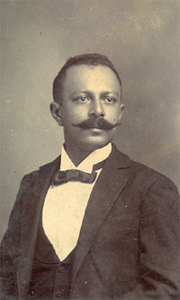

Tableau's JavaScript APIEmbed Tableau content on your website or application. Use JS functions to extend functionality. A great place to learn these skills from a no-nonsense author.
This is probably the hardest post to write well. Not for a lack of content but mainly because I am currently in a process of discovering who I am and so far I have not found the finish line. Maybe such a thing does not exist...maybe there is no finish line. If the finish line does exist then I wouldn't mind some directions: north, south. At the end of the hall and then take a left. Out the window and face first into the pavement. However I have a feeling that your finish line is different from my own and if I do take your directions then I may have to circle around to where I started. If life were a maze then that would make me a lonely minotaur's next meal. Perhaps the best way to describe myself is to narrate this journey, in a very summarized form, and as a result you the reader may get a better feeling for who I am.
For those of you who don't care to read longer than a few paragraphs here is the tl;dr:
I am a Tableau consultant that aspires to master creative digital technologies. I want to learn how things work because I like to build and create. I want to build things beautiful and learn a craft that that I find rewarding. This blog exists so that I may share my experiences with anyone who cares to read about them, and I hope that a few of you may find its content useful for your own projects.
That was brief and harmless.
Now back to the story. To start with I thinks it's necessary to give you some initial context. I was born and raised in Quito, Ecuador. A beautiful and peaceful country in South America inhabited by a peculiar people that exists between the western cultural tradition brought in by the Spanish and the ancestral indigenous culture. As a Tolkien fan I often think of my home as analogous to the Shire. Small, tranquil, stuck in time and shielded from the violent changes shaking the outside world. At least that's what it used to be.
If Ecuador is my Shire, does that then make me a Hobbit? Could be.
Alexander von Humboldt, the famous naturalist and explorer described us this way:
Ecuadorians are strange and unique beings, they sleep peacefully amid smoking volcanoes, they live in poverty amid incomparable wealth and they cheer up with sad music.
Very observant from his part. I digress from this description with the afterthought: "if you sleep peacefully, you live amid incomparable wealth and you stay cheerful with sad music: in what way are you poor?" In case you were wondering this site's landing page has an image of The Virgin of the Apocalypse in front of the Cotopaxi volcano in Quito, Ecuador.
My mother is Ecuadorian and my father is from the United States. I was raised speaking a hybrid language that mixed Spanish with English. This is probably the main reason why I enjoy learning languages and being exposed to different cultures.
In later years I took to learning Brazilian Portuguese and Mandarin Chinese. I was able to penetrate into Chinese culture quite well, at least for a 老外. I immensely cherish this experience and will never forget the amazing friends that I made a long the way. It was surreal and so different. None of us Ecuadorians could have predicted that China would become one of our great business partners someday however living through this change has prepared me very well to understand and love my neighbors.
Previously I worked as a Spanish language instructor and as a marketing coordinator for a Chinese drilling company among other occupations. I was entrusted with managing 4 different "just in time" OCTG (oil country tubular goods) supply contracts as a Contract Administrator. Everything from casing to tubing, linepipe and coating: OCTG was my jam! I made sure that it arrived on time and in good condition. My clients included state oil companies as well as American and Chinese multinational corporations. I continued a long line of oil field work on both sides of my family. Lloyd Earl Price (my grandfather and the OG traveler) originally from Oklahoma, started all of this when he decided that suburban living was too boring for him so he chose to travel around the world. He eventually ended up in Ecuador. My father Randle Price followed him there as a way to escape problems back home. He always was a free spirit but on meeting my mother María Fernanda and starting a family he worked the oil fields as Lloyd had done before him. Quite concidentally my great great grandfather on my mother's side was an accomplished Colombian industrialist, explorer, politician and conspirator - José Cicerón Castillo (Jotacé). Not only was was he pioneering manned flight in Colombia, he also fought on the side of the Liberals during La Guerra de los Mil Días for which he was frequently exiled. One of his passions was geology and he was one of the first explorers to predict vast hydrocarbon wealth on the eastern side of the Andes. His daughter and my great grandmother Blanca Elvira Castillo inherited his strong character and at the age to 16 decided to stay in Ecuador madly in love with my great grandfather Fabio Intriago.
I am currently employed at Tableau Software as a Product Consultant. That makes me a product expert and I love taking dives off the deep end. It really is a fascinating bit of technology and I am very lucky to be a part of the experience. This blog is dedicated towards logging this adventure for future reference and I hope it may provide useful information for you: the reader.
This post should not end here. I hope to add more stories for you to read in the future.
Thank you for your interest in this blog!
Very sincerely,
Stephen Price
Tableau's JavaScript APIEmbed Tableau content on your website or application. Use JS functions to extend functionality. A great place to learn these skills from a no-nonsense author.

Tableau Well LogsTransform your .las files into a friendlier format. Use Tableau Prep to create a repository of all your logs and let visual magic happen in Tableau Desktop.

Tableau Visual GalleryTableau Public is a treasure trove of fantastic content. Given it's open nature and size sometimes a little guidance is needed. Here you will find a curated collection of my favorite data visualizations.
Reach out to me via email. Feedback is always welcome and I appreciate you visiting my site.